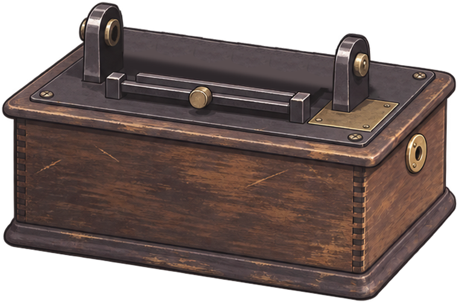

| BG-P01-S15-C03-01단색 바탕 | 완료 | 1 | —레이어·사용 컷P02-INTRO-C01, P02-S26-C02, P02-OUTRO-C01 | 1부에서 이미 출력한 실물 재사용. 2부 PSB에 없어도 누락으로 계산하지 않음. |
| BG-P02-S01-C01-01공식 결계 골목 | 완료 | 1 | —레이어·사용 컷P02-S01-C01 | 1부에서 이미 출력한 실물 재사용. 2부 PSB에 없어도 누락으로 계산하지 않음. |
| CHA002-03치코링_각성전 | 출력 필요 | 1 | 4874, 4875레이어·사용 컷CHA002-03_치코링_각성전_일체형 / CHA002-03_치코링_각성전_분절형P02-S01-C01, P02-S03-C01, P02-S03-C03, P02-S04-C01, P02-S04-C02, P02-S04-C04, P02-S05-C01, P02-S06-C03, P02-S06-C05, P02-S11-C01, P02-S13-C01, P02-S15-C01, P02-S15-C02, P02-S15-C03, P02-S15-C05, P02-S18-C01, P02-S19-C02, P02-S19-C03, P02-S21-C02, P02-S21-C04, P02-S22-C01, P02-S23-C01, P02-S27-C02 | 2부 PSB에 재출력용으로 배치됨. 이번 출력 대상으로 준비. |
| CHA001-01주군_고향 | 출력 필요 | 1 | 4902레이어·사용 컷CHA001-01_주군_고향P02-S01-C01, P02-S02-C01, P02-S03-C01, P02-S03-C03, P02-S04-C01, P02-S04-C04, P02-S08-C01, P02-S10-C01, P02-S13-C01, P02-S19-C02, P02-S21-C02, P02-S21-C05, P02-S24-C01 | 2부 PSB에 재출력용으로 배치됨. 이번 출력 대상으로 준비. |
| FX008유령불 | 완료 | 2 | —레이어·사용 컷P02-S01-C01, P02-S19-C03 | 1부에서 이미 출력한 실물 재사용. 2부 PSB에 없어도 누락으로 계산하지 않음. |
| NP011「黎明の少女」 チコりん 이름표 | 완료 | 1 | —레이어·사용 컷P02-S01-C01 | 1부에서 이미 출력한 실물 재사용. 2부 PSB에 없어도 누락으로 계산하지 않음. |
| BG-P2-CITY-MAP2부 도시 지도 전체 | 출력 필요 | 1 | 5145레이어·사용 컷BG-P2-CITY-MAP_2부_도시_지도_전체_03챕터P02-S02-C01, P02-S03-C04, P02-S04-C03 | 현재 열린 2부 PSB의 실제 출력 에셋 확인. 인쇄·재단 상태 확인. |
| BG-P02-S03-C01-01오래된 찻집 | 출력 필요 | 1 | 4866레이어·사용 컷BG-P02-S03-C01-01_오래된_찻집P02-S03-C01, P02-S03-C02, P02-S03-C03, P02-S04-C01, P02-S04-C04 | 현재 열린 2부 PSB의 실제 출력 에셋 확인. 인쇄·재단 상태 확인. |
| CHA007-01세나_고향 | 출력 필요 | 1 | 4857레이어·사용 컷CHA007-01_세나_고향P02-S03-C01, P02-S03-C03, P02-S04-C01, P02-S04-C04 | 현재 열린 2부 PSB의 실제 출력 에셋 확인. 인쇄·재단 상태 확인. |
| NP022「氷華の少女」 セナ 이름표 | 완료 | 1 | —레이어·사용 컷P02-S03-C01 | 1부에서 이미 출력한 실물 재사용. 2부 PSB에 없어도 누락으로 계산하지 않음. |
| CHB001-03이리스_마녀 | 출력 필요 | 1 | 4926레이어·사용 컷CHB001-03_이리스_마녀_슬픈미소P02-S03-C02, P02-S04-C02, P02-S12-C01, P02-S15-C03, P02-S15-C05, P02-S18-C01, P02-S19-C04, P02-S21-C01, P02-S26-C01, P02-S26-C03, P02-S26-C05 | 2부 PSB에 재출력용으로 배치됨. 이번 출력 대상으로 준비. |
| CHB001-02이리스_흑화전 | 출력 필요 | 1 | 4930레이어·사용 컷CHB001-02_이리스_흑화전P02-S03-C02 | 현재 열린 2부 PSB의 실제 출력 에셋 확인. 인쇄·재단 상태 확인. |
| CHC004-05평범한 자세의 얼굴 없는 모브 동료 묶음 | 출력 필요 | 1 | 4937레이어·사용 컷CHC004-05_평범한_자세의_얼굴_없는_모브_동료_묶음P02-S03-C02, P02-S15-C03, P02-S18-C03 | 현재 열린 2부 PSB의 실제 출력 에셋 확인. 인쇄·재단 상태 확인. |
| NP023「満開の少女」 あやぴょん 이름표 | 완료 | 1 | —레이어·사용 컷P02-S03-C02 | 1부에서 이미 출력한 실물 재사용. 2부 PSB에 없어도 누락으로 계산하지 않음. |
| PR019-BLOOM만개한 꽃_분리 출력 | 출력 필요 | 1 | 4996레이어·사용 컷PR019-BLOOM_만개한_꽃_분리_출력P02-S03-C04 | 현재 열린 2부 PSB의 실제 출력 에셋 확인. 인쇄·재단 상태 확인. |
| PR019-WITHERED시든 꽃_분리 출력 | 출력 필요 | 1 | 4995레이어·사용 컷PR019-WITHERED_시든_꽃_분리_출력P02-S03-C04 | 현재 열린 2부 PSB의 실제 출력 에셋 확인. 인쇄·재단 상태 확인. |
| BG-FLOWERLESS꽃을 뺀 만개 설명 배경 | 출력 필요 | 1 | 4935레이어·사용 컷BG-FLOWERLESS_꽃을_뺀_만개_설명_배경P02-S04-C02, P02-S18-C03, P02-S19-C03, P02-S19-C04, P02-S20-C02 | 현재 열린 2부 PSB의 실제 출력 에셋 확인. 인쇄·재단 상태 확인. |
| FX003검은 소용돌이 결계 | 완료 | 1 | —레이어·사용 컷P02-S04-C03 | 1부에서 이미 출력한 실물 재사용. 2부 PSB에 없어도 누락으로 계산하지 않음. |
| BG-P01-S11-C01-01버려진 성당내부 | 완료 | 1 | —레이어·사용 컷P02-S05-C01, P02-S06-C01, P02-S06-C02, P02-S06-C03, P02-S06-C04, P02-S06-C05, P02-S15-C04, P02-S16-C02 | 1부에서 이미 출력한 실물 재사용. 2부 PSB에 없어도 누락으로 계산하지 않음. |
| CHA003-03히땅_마법소녀 | 출력 필요 | 1 | 4878레이어·사용 컷CHA003-03_히땅_마법소녀P02-S05-C01, P02-S06-C03, P02-S06-C05, P02-S11-C01, P02-S13-C01, P02-S21-C01, P02-S21-C03, P02-S21-C04, P02-S22-C01, P02-S27-C02 | 2부 PSB에 재출력용으로 배치됨. 이번 출력 대상으로 준비. |
| CHB002-03에글랑틴_마녀 | 완료 | 1 | —레이어·사용 컷P02-S05-C01, P02-S06-C01, P02-S06-C03, P02-S06-C05 | 1부에서 이미 출력한 실물 재사용. 2부 PSB에 없어도 누락으로 계산하지 않음. |
| FX-THORN-ONE한쪽에만 가시가 난 줄기 | 출력 필요 | 1 | 4998, 4999레이어·사용 컷FX-THORN-ONE_한쪽에만_가시가_난_줄기_01 / FX-THORN-ONE_한쪽에만_가시가_난_줄기_02P02-S05-C01 | 현재 열린 2부 PSB의 실제 출력 에셋 확인. 인쇄·재단 상태 확인. |
| CHC001-05시민_분절01 | 완료 | 1 | —레이어·사용 컷P02-S06-C01, P02-S06-C02, P02-S14-C01, P02-S17-C01 | 1부에서 지정된 네 묶음으로 이미 재단해 사용한 실물을 그대로 재사용. 추가 재단·출력 불필요. |
| CHC001-06시민_분절02 | 완료 | 1 | —레이어·사용 컷P02-S06-C01, P02-S06-C02, P02-S14-C01, P02-S17-C01 | 1부에서 지정된 네 묶음으로 이미 재단해 사용한 실물을 그대로 재사용. 추가 재단·출력 불필요. |
| CHC001-07시민_분절03 | 완료 | 1 | —레이어·사용 컷P02-S06-C01, P02-S06-C02, P02-S14-C01, P02-S17-C01 | 1부에서 지정된 네 묶음으로 이미 재단해 사용한 실물을 그대로 재사용. 추가 재단·출력 불필요. |
| CHC001-08시민_분절04 | 완료 | 1 | —레이어·사용 컷P02-S06-C01, P02-S06-C02, P02-S14-C01, P02-S17-C01 | 1부에서 지정된 네 묶음으로 이미 재단해 사용한 실물을 그대로 재사용. 추가 재단·출력 불필요. |
| NP020「結縛の魔女」 エグランティーヌ 이름표 | 완료 | 1 | —레이어·사용 컷P02-S06-C01 | 1부에서 이미 출력한 실물 재사용. 2부 PSB에 없어도 누락으로 계산하지 않음. |
| NP025「縁の少女」 エグランティーヌ 이름표 | 완료 | 1 | —레이어·사용 컷P02-S06-C01 | 1부에서 이미 출력한 실물 재사용. 2부 PSB에 없어도 누락으로 계산하지 않음. |
| FX032붉은 실 | 가공 필요 | 1 | —레이어·사용 컷P02-S06-C01, P02-S06-C02 | 기출력 붉은 실/실물 실을 사용. PSB 이미지 누락으로 계산하지 않음. |
| FX018가시 덩굴 컬러 띠 | 완료 | 2 | —레이어·사용 컷P02-S06-C02, P02-S06-C03 | 1부에서 이미 출력한 실물 재사용. 2부 PSB에 없어도 누락으로 계산하지 않음. |
| CH-HANDS-01치코링·에글랑틴 손 인서트_내밀기 | 출력 필요 | 1 | 4943레이어·사용 컷CH-HANDS-01_치코링·에글랑틴_손_인서트_내밀기P02-S06-C04 | 현재 열린 2부 PSB의 실제 출력 에셋 확인. 인쇄·재단 상태 확인. |
| CH-HANDS-02치코링·에글랑틴 손 인서트_맞잡기 | 가공 필요 | 1 | 4943레이어·사용 컷CH-HANDS-01_치코링·에글랑틴_손_인서트_내밀기P02-S06-C04 | 4943은 실제로 서로 떨어진 두 손. 이 두 종이를 겹쳐 맞잡는 연출로 조립할지, 맞잡은 상태의 그림을 별도 출력할지 확인. |
| BG-P01-S05-C01-01주군의 하숙방 | 완료 | 1 | —레이어·사용 컷P02-S07-C01, P02-S08-C01 | 1부에서 이미 출력한 실물 재사용. 2부 PSB에 없어도 누락으로 계산하지 않음. |
| CHA011-02와카_인형 | 완료 | 1 | —레이어·사용 컷P02-S07-C01, P02-S10-C01, P02-S10-C02, P02-S19-C04, P02-S24-C01, P03-S02-C02 | 1부에서 이미 출력한 실물 재사용. 2부 PSB에 없어도 누락으로 계산하지 않음. |
| CHA012-02타마_인형 | 완료 | 1 | —레이어·사용 컷P02-S07-C01, P02-S10-C01, P02-S10-C02, P02-S19-C04, P02-S24-C01, P03-S02-C02 | 1부에서 이미 출력한 실물 재사용. 2부 PSB에 없어도 누락으로 계산하지 않음. |
| PR001낮은 책상 | 완료 | 1 | —레이어·사용 컷P02-S07-C01, P02-S08-C01, P03-S01-C01 | 1부에서 이미 출력한 실물 재사용. 2부 PSB에 없어도 누락으로 계산하지 않음. |
| PR-COMMON-TORN공통 원본_해약 마지막 줄 절취 | 가공 필요 | 1 | 4986레이어·사용 컷PR-COMMON-FULL_공통_원본_전문_해약_마지막_조항P02-S07-C01, P02-S08-C01 | 공통 원본 4986의 여분을 같은 크기로 출력한 뒤 마지막 조항을 절취. 새 작화 누락이 아니라 절취용 여분·가공 확인. |
| CHA013-01황혼빛 아이_기본 | 출력 필요 | 1 | 4924레이어·사용 컷CHA013-01_황혼빛_아이_기본P02-S08-C01 | 현재 열린 2부 PSB의 실제 출력 에셋 확인. 인쇄·재단 상태 확인. |
| BG-P01-S02-C01-01골동품상점 내부 | 완료 | 1 | —레이어·사용 컷P02-S09-C01 | 1부에서 이미 출력한 실물 재사용. 2부 PSB에 없어도 누락으로 계산하지 않음. |
| CHA008-02하케 씨_인간 | 완료 | 1 | —레이어·사용 컷P02-S09-C01 | 1부에서 이미 출력한 실물 재사용. 2부 PSB에 없어도 누락으로 계산하지 않음. |
| PR-REC-01실린더 축음기 5부품 세트 | 완료 | 0 | 4978레이어·사용 컷PR-REC-01_실린더_축음기_5부품_세트P02-S09-C01, P02-S10-C01, P02-S10-C03, P02-S11-C01, P02-S19-C01, P02-S19-C04 | PSB 4978 안에 다섯 부품과 조립 참고가 있음. 세트 그림을 별도 출력 준비물 1종으로 중복 계산하지 않음. |
| PR-REC-CYLINDER실린더 원통 | 출력 필요 | 1 | 4978레이어·사용 컷PR-REC-01_실린더_축음기_5부품_세트P02-S09-C01, P02-S10-C01, P02-S10-C03, P02-S11-C01, P02-S19-C01, P02-S19-C04 | 현재 열린 2부 PSB의 실제 출력 에셋 확인. 인쇄·재단 상태 확인. |
  | PR-REC-BOX축음기 상자 | 출력 필요 | 1 | 4978레이어·사용 컷PR-REC-01_실린더_축음기_5부품_세트P02-S09-C01, P02-S10-C01, P02-S10-C03, P02-S11-C01, P02-S19-C01, P02-S19-C04 | 현재 열린 2부 PSB의 실제 출력 에셋 확인. 인쇄·재단 상태 확인. |
| PR-REC-LID축음기 상자 뚜껑 | 출력 필요 | 1 | 4978레이어·사용 컷PR-REC-01_실린더_축음기_5부품_세트P02-S09-C01, P02-S10-C01, P02-S10-C03, P02-S11-C01, P02-S19-C01, P02-S19-C04 | 현재 열린 2부 PSB의 실제 출력 에셋 확인. 인쇄·재단 상태 확인. |
| PR-REC-HORN축음기 나팔 | 출력 필요 | 1 | 4978레이어·사용 컷PR-REC-01_실린더_축음기_5부품_세트P02-S09-C01, P02-S10-C01, P02-S10-C03, P02-S11-C01, P02-S19-C01, P02-S19-C04 | 현재 열린 2부 PSB의 실제 출력 에셋 확인. 인쇄·재단 상태 확인. |
| PR-REC-CRANK축음기 태엽 | 출력 필요 | 1 | 4978레이어·사용 컷PR-REC-01_실린더_축음기_5부품_세트P02-S09-C01, P02-S10-C01, P02-S10-C03, P02-S11-C01, P02-S19-C01, P02-S19-C04 | 현재 열린 2부 PSB의 실제 출력 에셋 확인. 인쇄·재단 상태 확인. |
| BG-P01-S08-C01-01목공소 내부(오후) | 완료 | 1 | —레이어·사용 컷P02-S10-C01, P02-S10-C02, P02-S11-C01, P02-S21-C04, P02-S27-C02 | 1부에서 이미 출력한 실물 재사용. 2부 PSB에 없어도 누락으로 계산하지 않음. |
| CHA010-02쿠로코_목수 | 완료 | 1 | —레이어·사용 컷P02-S10-C01, P02-S13-C01, P02-S21-C04, P02-S27-C02 | 1부에서 이미 출력한 실물 재사용. 2부 PSB에 없어도 누락으로 계산하지 않음. |
| PR-COMMON-FULL공통 원본_전문_해약 마지막 조항 | 출력 필요 | 1 | 4986레이어·사용 컷PR-COMMON-FULL_공통_원본_전문_해약_마지막_조항P02-S10-C01, P02-S10-C02, P02-S10-C03, P02-S20-C02, P02-S24-C01 | 현재 열린 2부 PSB의 실제 출력 에셋 확인. 인쇄·재단 상태 확인. 마지막 줄 절취용·최종 찢기용은 같은 원본의 별도 여분으로 준비. |
| PR035「個別契約」 문서 | 출력 필요 | 4 | 5150, 5151, 5152, 5153레이어·사용 컷PR-CONTRACT-S_계약서_작은버전1~4_01 / PR-CONTRACT-S_계약서_작은버전1~4_02 / PR-CONTRACT-S_계약서_작은버전1~4_03 / PR-CONTRACT-S_계약서_작은버전1~4_04P02-S10-C02 | 설명용 개별 문서는 PSB 소형 계약서 5148~5153을 사용. 별도의 個別契約 도식을 새로 출력하지 않음. |
| FX039연결선 | 가공 필요 | 1 | —레이어·사용 컷P02-S10-C02 | 실물 실·종이 띠를 사용. PSB 이미지 누락과 구분. |
| BG-P01-S08-C04-01목공소 내부(일기 배경) | 완료 | 1 | —레이어·사용 컷P02-S10-C03, P02-S16-C01, P02-S27-C03 | 1부에서 이미 출력한 실물 재사용. 2부 PSB에 없어도 누락으로 계산하지 않음. |
| CHA004-03레오나_마법소녀 | 출력 필요 | 1 | 4890레이어·사용 컷CHA004-03_레오나_마법소녀P02-S11-C01, P02-S13-C01, P02-S21-C01, P02-S21-C02, P02-S21-C04, P02-S22-C01, P02-S25-C01, P02-S27-C01, P02-S27-C02 | 2부 PSB에 재출력용으로 배치됨. 이번 출력 대상으로 준비. |
| CHA014-03엔마_마법소녀 | 완료 | 1 | —레이어·사용 컷P02-S11-C01, P02-S21-C04, P02-S22-C01, P02-S27-C02 | 1부에서 이미 출력한 실물 재사용. 2부 PSB에 없어도 누락으로 계산하지 않음. |
| BG-P02-S12-C01-01-REV공식 시계탑 상공_최종 결계 | 출력 필요 | 1 | 4864레이어·사용 컷BG-P02-S12-C01-01-REV_공식_시계탑_상공_최종_결계P02-S12-C01, P02-S12-C02, P02-S13-C01, P02-S14-C01, P02-S17-C01, P02-S18-C02 | 현재 열린 2부 PSB의 실제 출력 에셋 확인. 인쇄·재단 상태 확인. |
| CHB005-03뮤게_마녀 | 출력 필요 | 1 | 5003레이어·사용 컷CHB005-03_뮤게_마녀P02-S12-C01, P02-S15-C01, P02-S15-C02, P02-S23-C01 | 현재 열린 2부 PSB의 실제 출력 에셋 확인. 인쇄·재단 상태 확인. |
| NP027「造花の魔女」ミュゲ・シエル 이름표 | 출력 필요 | 1 | 5090레이어·사용 컷NP027_「造花の魔女」ミュゲ・シエル_이름표P02-S12-C01 | 현재 열린 2부 PSB의 실제 출력 에셋 확인. 인쇄·재단 상태 확인. |
| FX-EARTH-WALL목제 이동 방벽 | 출력 필요 | 1 | 5011, 5012레이어·사용 컷FX-EARTH-WALL_목제_이동_방벽_01 / FX-EARTH-WALL_목제_이동_방벽_02P02-S13-C01 | 현재 열린 2부 PSB의 실제 출력 에셋 확인. 인쇄·재단 상태 확인. |
| CHA005-03쥬리땅_마법소녀 | 완료 | 1 | —레이어·사용 컷P02-S14-C01, P02-S17-C01 | 1부에서 이미 출력한 실물 재사용. 2부 PSB에 없어도 누락으로 계산하지 않음. |
| PR042확성기 | 출력 필요 | 1 | 4799레이어·사용 컷PR042_확성기P02-S14-C01, P02-S17-C01 | 현재 열린 2부 PSB의 실제 출력 에셋 확인. 인쇄·재단 상태 확인. |
| BG-MUGUET-CORE공식 시계탑 코어 입구 | 출력 필요 | 1 | 5120레이어·사용 컷BG-MUGUET-CORE_공식_시계탑_코어_입구P02-S15-C01, P02-S15-C02 | 현재 열린 2부 PSB의 실제 출력 에셋 확인. 인쇄·재단 상태 확인. |
| BG-P02-S15-C01-01시계탑 결계 코어 내부 | 출력 필요 | 1 | 4862레이어·사용 컷BG-P02-S15-C01-01_시계탑_결계_코어_내부P02-S15-C03, P02-S15-C05, P02-S18-C01, P02-S19-C01, P02-S19-C02, P02-S19-C05, P02-S20-C01, P02-S20-C03, P02-S21-C01, P02-S21-C02, P02-S21-C03, P02-S21-C05, P02-S22-C01, P02-S23-C01, P02-S24-C01 | 현재 열린 2부 PSB의 실제 출력 에셋 확인. 인쇄·재단 상태 확인. |
| CHC004-06모브 동료 검은 뒷종이 | 출력 필요 | 1 | 5108레이어·사용 컷CHC004-06_모브_동료_검은_뒷종이P02-S15-C03, P02-S20-C02 | 현재 열린 2부 PSB의 실제 출력 에셋 확인. 인쇄·재단 상태 확인. |
| FX041닫히는 꽃잎 하늘 | 가공 필요 | 1 | —레이어·사용 컷P02-S15-C03, P02-S15-C05 | 사용자 확인: 아직 출력하지 않았으며 실제로 필요한 소품인지 연출 재검토 예정. 현재 PSB 미배치이나 필수 누락 집계에서 제외하고 검토 대기로 유지. |
| PR044시계탑 코어 입구 | 출력 필요 | 1 | —레이어·사용 컷P02-S15-C03 | 배경판 5120은 있으나 움직이는 소형 입구 조각이 별도로 배치되지 않음. 작은 규격의 입구 파츠를 추가 출력. |
| FX036작은 꽃잎 | 가공 필요 | 1 | —레이어·사용 컷P02-S15-C04 | 사용자 확인: 아직 출력하지 않았으며 실제로 필요한 소품인지 연출 재검토 예정. 현재 PSB 미배치이나 필수 누락 집계에서 제외하고 검토 대기로 유지. |
| PR011일본어 일기 | 출력 필요 | 1 | 4912레이어·사용 컷PR011_일본어_일기_어제와오늘_속지포함P02-S16-C01, P02-S19-C03, P02-S27-C03 | 2부 PSB에 재출력용으로 배치됨. 이번 출력 대상으로 준비. |
| PR-DIARY-PAGES일기 속지_어제와 오늘_넘김 | 출력 필요 | 2 | 4912레이어·사용 컷PR011_일본어_일기_어제와오늘_속지포함P02-S16-C01 | 현재 열린 2부 PSB의 실제 출력 에셋 확인. 인쇄·재단 상태 확인. 어제 怖かった 3회 및 오늘 실제 본문 속지 두 상태 확인. |
| CHA002-03-H02치코링_각성전-맞잡는손 | 가공 필요 | 1 | 4943레이어·사용 컷CH-HANDS-01_치코링·에글랑틴_손_인서트_내밀기P02-S16-C02 | 1부 손 출력물과 PSB 4943의 손을 분리·재배치해 사용. 작은 규격과 맞잡는 위치 확인; 1부 기출력을 누락으로 계산하지 않음. |
| CHB002-03-H01에글랑틴_마녀-맞잡는손 | 가공 필요 | 1 | 4943레이어·사용 컷CH-HANDS-01_치코링·에글랑틴_손_인서트_내밀기P02-S16-C02 | 1부 손 출력물과 PSB 4943의 손을 분리·재배치해 사용. 작은 규격과 맞잡는 위치 확인; 1부 기출력을 누락으로 계산하지 않음. |
| PR-P02-S11-C02-03-01일본어 일기_휴대용 | 가공 필요 | 1 | 4912레이어·사용 컷PR011_일본어_일기_어제와오늘_속지포함P02-S18-C01, P02-S22-C01, P02-S23-C01 | 1부 PR011 책과 PSB 4912 원본을 사용. 큰 인서트와 구분해 휴대용 크기를 확인; 1부 기출력 책이 있으므로 신규 이미지 누락에서 제외. |
| PR049씨앗 | 출력 필요 | 6 | —레이어·사용 컷P02-S19-C03 | 구슬 속 씨앗은 4980~4985에 있지만 독립 씨앗 종이는 없음. 씨앗만 분리한 출력물 필요. |
| CHB001-03-CU이리스_마녀_표정 클로즈업 | 출력 필요 | 1 | 5103, 5102레이어·사용 컷CHB001-03-CU_이리스_마녀_표정클로즈업_일반 / CHB001-03-CU_이리스_마녀_표정클로즈업_슬픈미소P02-S19-C05 | 현재 열린 2부 PSB의 실제 출력 에셋 확인. 인쇄·재단 상태 확인. |
| CHB003-03라르므_마녀 | 출력 필요 | 1 | 4842레이어·사용 컷CHB003-03_라르므_마녀P02-S20-C01, P02-S20-C02, P02-S20-C03, P02-S21-C01, P02-S21-C03, P02-S24-C01 | 현재 열린 2부 PSB의 실제 출력 에셋 확인. 인쇄·재단 상태 확인. |
| NP026「悲嘆の魔女」 ラルム 이름표 | 완료 | 1 | —레이어·사용 컷P02-S20-C01 | 1부에서 이미 출력한 실물 재사용. 2부 PSB에 없어도 누락으로 계산하지 않음. |
| PR-SEED-GLASS씨앗 하나를 가둔 검은 유리구슬 | 출력 필요 | 5 | 4980, 4981, 4982, 4983, 4984, 4985레이어·사용 컷PR-SEED-GLASS_씨앗_하나를_가둔_검은_유리구슬_01 / PR-SEED-GLASS_씨앗_하나를_가둔_검은_유리구슬_02 / PR-SEED-GLASS_씨앗_하나를_가둔_검은_유리구슬_03 / PR-SEED-GLASS_씨앗_하나를_가둔_검은_유리구슬_04 / PR-SEED-GLASS_씨앗_하나를_가둔_검은_유리구슬_05 / PR-SEED-GLASS_씨앗_하나를_가둔_검은_유리구슬_06P02-S20-C03 | 현재 열린 2부 PSB의 실제 출력 에셋 확인. 인쇄·재단 상태 확인. |
| CHA006-03네네링_마법소녀 | 완료 | 1 | —레이어·사용 컷P02-S21-C01, P02-S21-C04, P02-S22-C01, P02-S27-C02 | 1부에서 이미 출력한 실물 재사용. 2부 PSB에 없어도 누락으로 계산하지 않음. |
| FX-REV-WIND히땅 바람 이펙트 | 출력 필요 | 1 | 5136레이어·사용 컷FX-REV-WIND_히땅_바람_이펙트P02-S21-C01, P02-S23-C01 | 현재 열린 2부 PSB의 실제 출력 에셋 확인. 인쇄·재단 상태 확인. |
| FX-REV-FLASH네네링 섬광 이펙트 | 출력 필요 | 1 | 5137레이어·사용 컷FX-REV-FLASH_네네링_섬광_이펙트P02-S21-C01, P02-S23-C01 | 현재 열린 2부 PSB의 실제 출력 에셋 확인. 인쇄·재단 상태 확인. |
| FX001불꽃 띠 | 완료 | 1 | —레이어·사용 컷P02-S21-C01, P02-S23-C01 | 1부에서 이미 출력한 실물 재사용. 2부 PSB에 없어도 누락으로 계산하지 않음. |
| FX048꽃잎 방벽 | 가공 필요 | 1 | —레이어·사용 컷P02-S21-C01 | 사용자 확인: 아직 출력하지 않았으며 실제로 필요한 소품인지 연출 재검토 예정. 현재 PSB 미배치이나 필수 누락 집계에서 제외하고 검토 대기로 유지. |
| FX-REV-MASK뮤게 가면 이펙트 | 출력 필요 | 1 | 5140레이어·사용 컷FX-REV-MASK_뮤게_가면_이펙트P02-S23-C01 | 현재 열린 2부 PSB의 실제 출력 에셋 확인. 인쇄·재단 상태 확인. |
| CHB-LARME-WHITE라르므_흰실루엣 | 출력 필요 | 1 | 5156레이어·사용 컷CHB-LARME-WHITE_라르므_흰실루엣_뒷면사용P02-S24-C01 | 라르므 복제본 5156을 앞면과 같은 윤곽으로 재단한 뒤 뒷면을 보이게 사용. 흰색 별도 인쇄나 새 작화 불필요. |
| PR020-S치코 계약서_작은버전 | 출력 필요 | 1 | 5149레이어·사용 컷PR020-S_치코_계약서_작은버전P02-S24-C01 | 현재 열린 2부 PSB의 실제 출력 에셋 확인. 인쇄·재단 상태 확인. |
| PR007히스이의 일본어 계약서 | 출력 필요 | 1 | 5148레이어·사용 컷PR007_히스이의_일본어_계약서_작은버전P02-S24-C01 | 2부 PSB에 재출력용으로 배치됨. 이번 출력 대상으로 준비. |
| PR-CONTRACT-S계약서_작은버전1~4 | 출력 필요 | 4 | 5150, 5151, 5152, 5153레이어·사용 컷PR-CONTRACT-S_계약서_작은버전1~4_01 / PR-CONTRACT-S_계약서_작은버전1~4_02 / PR-CONTRACT-S_계약서_작은버전1~4_03 / PR-CONTRACT-S_계약서_작은버전1~4_04P02-S24-C01 | 현재 열린 2부 PSB의 실제 출력 에셋 확인. 인쇄·재단 상태 확인. |
| BG-P02-S27-C01-01공식 결계 해제 후 별밤 | 출력 필요 | 1 | 4859레이어·사용 컷BG-P02-S27-C01-01_공식_결계_해제_후_별밤P02-S25-C01, P02-S26-C01, P02-S26-C03, P02-S26-C05, P02-S27-C01 | 현재 열린 2부 PSB의 실제 출력 에셋 확인. 인쇄·재단 상태 확인. |
| CHA002-02치코_평상복 | 완료 | 1 | —레이어·사용 컷P02-S25-C01, P02-S26-C03, P02-S26-C05, P02-S27-C01 | 1부에서 이미 출력한 실물 재사용. 2부 PSB에 없어도 누락으로 계산하지 않음. |
| CHA003-01히스이_평상복 | 완료 | 1 | —레이어·사용 컷P02-S25-C01, P02-S27-C01 | 1부에서 이미 출력한 실물 재사용. 2부 PSB에 없어도 누락으로 계산하지 않음. |
| CHA006-01네네_평상복 | 완료 | 1 | —레이어·사용 컷P02-S25-C01 | 1부에서 이미 출력한 실물 재사용. 2부 PSB에 없어도 누락으로 계산하지 않음. |
| FX025큰 꽃잎 | 가공 필요 | 1 | —레이어·사용 컷P02-S26-C01 | 사용자 확인: 아직 출력하지 않았으며 실제로 필요한 소품인지 연출 재검토 예정. 현재 PSB 미배치이나 필수 누락 집계에서 제외하고 검토 대기로 유지. |
| PR057타버린 씨앗 그림 | 출력 필요 | 1 | —레이어·사용 컷P02-S26-C02 | 현재 2부 PSB에 타버린 씨앗 그림이 없음. 기존 전달 원본을 추가 배치·출력. |
| BG-GARDEN-DOORS들어오고 나가는 문이 있는 정원 | 출력 필요 | 1 | 5117레이어·사용 컷BG-GARDEN-DOORS_들어오고_나가는_문이_있는_정원P02-S26-C04 | 현재 열린 2부 PSB의 실제 출력 에셋 확인. 인쇄·재단 상태 확인. |
| FX052꽃잎 조각 | 가공 필요 | 1 | —레이어·사용 컷P02-S26-C05 | 사용자 확인: 아직 출력하지 않았으며 실제로 필요한 소품인지 연출 재검토 예정. 현재 PSB 미배치이나 필수 누락 집계에서 제외하고 검토 대기로 유지. |
| FX054눈물 표식 | 가공 필요 | 1 | —레이어·사용 컷P02-S27-C01 | 사용자 확인: 아직 출력하지 않았으며 실제로 필요한 소품인지 연출 재검토 예정. 현재 PSB 미배치이나 필수 누락 집계에서 제외하고 검토 대기로 유지. |
| BG-P02-S27-C04-01흰 바탕 | 완료 | 1 | —레이어·사용 컷P02-S27-C04 | 1부에서 이미 출력한 실물 재사용. 2부 PSB에 없어도 누락으로 계산하지 않음. |
| BG-P03-S01-C01-01네코저택 내부 낮 | 완료 | 1 | —레이어·사용 컷P03-S01-C01 | 1부에서 이미 출력한 실물 재사용. 2부 PSB에 없어도 누락으로 계산하지 않음. |
| CHA001-01-H01주군_고향-손확대 | 완료 | 1 | —레이어·사용 컷P03-S01-C01 | 1부에서 이미 출력한 실물 재사용. 2부 PSB에 없어도 누락으로 계산하지 않음. |
| CHA005-01쥬리_고향 | 완료 | 1 | —레이어·사용 컷P03-S01-C01 | 1부에서 이미 출력한 실물 재사용. 2부 PSB에 없어도 누락으로 계산하지 않음. |
| PR062「マジカル☆シノビ」 각본집 | 가공 필요 | 1 | 4912레이어·사용 컷PR011_일본어_일기_어제와오늘_속지포함P03-S01-C01 | PSB 4912의 빈 책 바탕은 있으나 マジカル☆シノビ 제목·배역 본문은 없음. 에필로그용 문구를 인쇄·부착하거나 손글씨로 가공. |
| PR066아침밥 인서트 | 출력 필요 | 1 | 5127레이어·사용 컷PR066_아침밥_인서트P03-S01-C01 | 현재 열린 2부 PSB의 실제 출력 에셋 확인. 인쇄·재단 상태 확인. |
| BG-P01-S01-C01-01네코저택 외부 낮 | 완료 | 1 | —레이어·사용 컷P03-S02-C01, P03-S02-C02 | 1부에서 이미 출력한 실물 재사용. 2부 PSB에 없어도 누락으로 계산하지 않음. |
| CHA002-01치코_고향 | 완료 | 1 | —레이어·사용 컷P03-S02-C01, P03-S02-C02 | 1부에서 이미 출력한 실물 재사용. 2부 PSB에 없어도 누락으로 계산하지 않음. |
| PR068고향 일기_이유 불명 | 가공 필요 | 1 | 4912레이어·사용 컷PR011_일본어_일기_어제와오늘_속지포함P03-S02-C01 | PSB 4912의 빈 책 바탕은 있으나 主君・ジュリ・理由不明 본문은 없음. 에필로그용 본문을 인쇄·부착하거나 손글씨로 가공. |
| BG-P01-S01-C01-01아야메의 담장과 꽃밭 | 완료 | 1 | —레이어·사용 컷P03-S03-C01 | 현재 배치도는 1부 네코저택 외부 낮 그림(png-BG01)을 그대로 사용. 기존 출력 배경판으로 촬영하며 별도 새 배경 누락으로 계산하지 않음. |
| CHB001-01아야메_고향 | 완료 | 1 | —레이어·사용 컷P03-S03-C01 | 1부에서 이미 출력한 실물 재사용. 2부 PSB에 없어도 누락으로 계산하지 않음. |
| PR070빵 | 출력 필요 | 1 | 5128레이어·사용 컷PR070_빵P03-S03-C01 | 현재 열린 2부 PSB의 실제 출력 에셋 확인. 인쇄·재단 상태 확인. |
| PR071온전한 붓꽃 | 출력 필요 | 1 | 5129레이어·사용 컷PR071_온전한_붓꽃P03-S03-C01 | 현재 열린 2부 PSB의 실제 출력 에셋 확인. 인쇄·재단 상태 확인. |
| FX-REV-RING엔마루 윤회고리 이펙트 | 출력 필요 | 1 | 5138레이어·사용 컷FX-REV-RING_엔마루_윤회고리_이펙트 | 현재 열린 2부 PSB의 실제 출력 에셋 확인. 인쇄·재단 상태 확인. 현재 컷 지정 밖의 PSB 추가 에셋으로 준비물 목록에 등록. |
| BG-P2-CITY-MAP-042부 도시 지도 전체_04챕터 | 출력 필요 | 1 | 5144레이어·사용 컷BG-P2-CITY-MAP-04_2부_도시_지도_전체_04챕터 | 현재 열린 2부 PSB의 실제 출력 에셋 확인. 인쇄·재단 상태 확인. 현재 컷 지정 밖의 PSB 추가 에셋으로 준비물 목록에 등록. |
| BG-P02-S26-C01-01해방된 결계 코어 | 출력 필요 | 1 | 4860레이어·사용 컷BG-P02-S26-C01-01_해방된_결계_코어 | 현재 열린 2부 PSB의 실제 출력 에셋 확인. 인쇄·재단 상태 확인. 현재 컷 지정 밖의 PSB 추가 에셋으로 준비물 목록에 등록. |